OTOBO Greenbone Connector¶
Beschreibung¶
Der Greenbone Connector verbindet die OTOBO-CMDB mit einem Greenbone-Schwachstellenscanner (vormals OpenVAS). Schwachstellen-Scans werden dort eingerichtet, gestartet und gelesen, wo das Gerät ohnehin verwaltet wird: am Config Item. Es gibt keine zweite Oberfläche, keine zweite Geräteliste und keine Pflege derselben Daten an zwei Stellen.
Wer ein Config Item öffnet, sieht eine Section Schwachstellen mit den letzten Scans, dem höchsten gefundenen Schweregrad, der Anzahl der Funde nach Stufe und einem Link auf den vollständigen Bericht in Greenbone. Wer das Recht dazu hat, startet den Scan von dort aus auch.
Die Verbindung läuft über GMP 22.7, wahlweise über eine SSH-Verbindung (Standard) oder direkt über einen TLS-Socket. Mehrere Greenbone-Server lassen sich parallel betreiben — etwa einer je Standort — und jedes Config Item verweist auf den Server, der es scannt.
Was das Paket mitbringt:
Serververwaltung im Admin-Bereich, mit Verbindungstest vor dem Speichern
Zugangsdatenverwaltung für authentifizierte Scans, in allen vier Greenbone-Formaten
Scan-Einstellungen am Config Item — Server, Scan-Konfiguration, Zeitplan, Portliste, Scanner, vier Zugangsdaten-Felder und eine Ausschlussliste; die Auswahllisten kommen live vom gewählten Server
Section „Schwachstellen“ am Config Item mit den letzten Berichten, Funden und Fehlergründen
Scan auf Anforderung starten, unabhängig vom hinterlegten Zeitplan
Bericht öffnen und herunterladen in allen Formaten, die der Greenbone-Server anbietet
Geerbte Netzscans: ein Gerät ohne eigenen Scan zeigt die Funde, die der Scan seines IP-Netzes für seine Adressen geliefert hat
Gespeicherte Ergebnisse für Listen und Suche, damit Übersichten den Schweregrad zeigen können, ohne Greenbone je Zeile zu fragen
Einsatzszenarien¶
Schwachstellenmanagement ohne zweites Werkzeug. Der Betrieb sieht Scan-Ergebnisse dort, wo er ohnehin arbeitet. Wer nur wissen will, wie es um einen Server steht, braucht keinen Greenbone-Zugang.
Nachweispflicht gegenüber Audit und Zertifizierung. Für jedes Gerät ist belegbar, wann es zuletzt gescannt wurde, was gefunden wurde und wo der Bericht liegt. Der Bericht selbst lässt sich als PDF herunterladen und einem Ticket anhängen.
Ticket aus einem Fund. Weil Config Item und Ticketsystem dasselbe System sind, entsteht aus einem Fund ohne Medienbruch ein Ticket am betroffenen Gerät.
Netzweite Scans mit gerätescharfer Auswertung. Ein Scan über ein ganzes IP-Netz genügt; jedes Gerät im Netz zeigt anschließend die Funde, die zu seinen eigenen Adressen gehören.
Mehrere Standorte, mehrere Scanner. Jeder Standort bekommt seinen Greenbone-Server, die Auswertung bleibt an einer Stelle.
Priorisierung nach Schweregrad. Weil das Ergebnis in Feldern des Config Items steht, lässt sich eine CMDB-Übersicht nach „Kritisch“ filtern und sortieren.
Systemvoraussetzungen¶
Framework¶
OTOBO 11.0.x
Pakete¶
Paket |
Version |
Anmerkung |
|---|---|---|
|
11.0.x |
Zwingend. Der Connector erweitert die CMDB, er bringt keine eigene mit. |
|
mindestens 11.0.4 |
Nur falls installiert — siehe Warnung unten. |
Warnung
Ist ITSMPublicCMDB in einer Version vor 11.0.4 installiert, bleibt die Section
„Schwachstellen“ still leer: ohne Fehlermeldung, ohne Log-Eintrag, nur eine leere Kachel.
Ältere Versionen legen eine veraltete Kopie von
Kernel/Output/HTML/ITSMConfigItem/DynamicField.pm nach Custom/, in der der
Erweiterungspunkt für Sections noch fehlt.
Vor der Installation prüfen, in Admin → Paketverwaltung oder auf der Kommandozeile:
bin/otobo.Console.pl Admin::Package::List | grep -A1 ITSMPublicCMDB
Software von Drittanbietern¶
Greenbone / OpenVAS mit GMP 22.7. Der Connector spricht die Schnittstelle Greenbone Management Protocol an, nicht die Weboberfläche.
Für den SSH-Weg (Standard): ein SSH-Client auf dem OTOBO-System — das offizielle OTOBO-Image bringt einen mit — und auf dem Greenbone-Server der freigeschaltete Benutzer
gmp, dessen erzwungenes Kommando die GMP-Schnittstelle auf stdin und stdout legt.Für den TLS-Weg: ein erreichbarer GMP-Port, üblicherweise 9390. Viele Installationen halten ihn geschlossen; deshalb ist SSH die Vorgabe.
Überblick¶
Installation — Paket einspielen und Hostschlüssel hinterlegen
Konfiguration — alle Einstellungen des Pakets
Admin-Handbuch — Server und Zugangsdaten einrichten, Klassen scanbar machen, Listenspalten und der nächtliche Abgleich
Anwender-Handbuch — Scan am Config Item einrichten, Ergebnisse lesen, Scan starten, Bericht holen
Referenz — Berechtigungen, Vererbung, was in Greenbone angelegt wird
Installation¶
Das Paket wird wie jedes OTOBO-Paket installiert, über Admin → Paketverwaltung oder auf der Kommandozeile:
bin/otobo.Console.pl Admin::Package::Install /pfad/zu/GreenboneConnector.opm
Bei der Installation legt das Paket an:
die dynamischen Felder für die Scan-Einstellungen, gebündelt in einem Set
GreenboneScandie dynamischen Felder für das gespeicherte Scan-Ergebnis (Schweregrad, Stufe, Scanstatus, Scan-Datum, Bericht, Herkunft)
die Config-Item-Rolle Greenbone mit den Sections
Scan Settings,Scan ResultundVulnerabilitieszwei Datenbanktabellen:
greenbone_serverundgreenbone_ci_scan
Bemerkung
Das Paket entscheidet nicht, welche Klassen gescannt werden. Das legt der Administrator je Klasse fest — siehe Klassen scanbar machen.
Hostschlüssel hinterlegen¶
Vor der ersten SSH-Verbindung muss der Fingerabdruck jedes Greenbone-Servers hinterlegt sein. Der
Webbenutzer hat kein nutzbares Home-Verzeichnis, deshalb tritt eine eigene Datei an die Stelle der
üblichen ~/.ssh/known_hosts. Einmal je Server:
sudo -u otobo bash -c 'ssh-keyscan -H <greenbone-server> >> /opt/otobo/var/greenbone/known_hosts'
Fehlt der Eintrag, nennt die Fehlermeldung des Verbindungstests genau diesen Befehl.
Konfiguration¶
Alle Einstellungen stehen in Admin → Systemkonfiguration unter Core → GreenboneConnector. Die
Vorgabewerte sind für den Normalbetrieb gedacht; keiner davon muss angefasst werden, damit das Paket
arbeitet.
{kind=link}
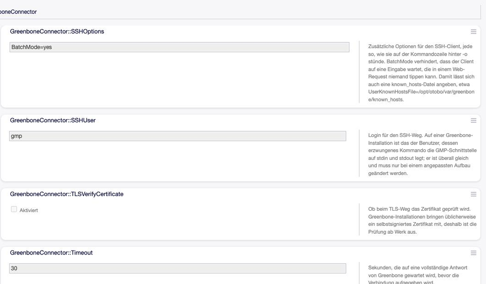
Abb. 1 Die Einstellungen des Connectors in der Systemkonfiguration. Jede trägt ihre Begründung mit.¶
Verbindung¶
Einstellung |
Standard |
Bedeutung |
|---|---|---|
|
30 |
Sekunden bis zur vollständigen Antwort, bevor die Verbindung aufgegeben wird. |
|
300 |
Sekunden, wenn Greenbone einen Bericht als Datei erzeugen soll. Bewusst getrennt vom allgemeinen Zeitlimit: eine Zusammenfassung zu lesen dauert Sekundenbruchteile, denselben Bericht als PDF zu erzeugen dauert Sekunden, über ein ganzes Netz deutlich länger. |
|
|
Login für den SSH-Weg. Auf einer Greenbone-Installation überall gleich; nur bei angepasstem Aufbau zu ändern. |
|
|
Zusätzliche Optionen des SSH-Clients, jede so, wie sie hinter |
|
(leer) |
Abweichender Pfad für die akzeptierten Hostschlüssel. Leer bedeutet
|
|
aus |
Ob beim TLS-Weg das Zertifikat geprüft wird. Greenbone-Installationen bringen üblicherweise ein selbstsigniertes Zertifikat mit, deshalb ist die Prüfung ab Werk aus. |
Was gescannt wird¶
Einstellung |
Standard |
Bedeutung |
|---|---|---|
|
(drei Felder) |
Welche Felder eines Config Items sagen, was gescannt wird — der Reihe nach; das erste Feld
mit Inhalt gewinnt. Ein Feld innerhalb eines Sets wird als |
|
(ein Feld) |
Welches Feld auf das IP-Netz zeigt, zu dem ein Gerät gehört. Über diese Referenz erbt ein Gerät den Scan seines Netzes. Weil das Netz über die Referenz aufgelöst wird und nicht über die Adresse, kann eine doppelt vergebene IP in einem anderen Netz keine fremden Ergebnisse hereinziehen. |
|
|
Name des Feld-Sets am Config Item. Nur zu ändern, wenn das Set umbenannt wurde. |
|
|
Name des Server-Feldes darin. Die übrigen Auswahllisten werden von genau dem Server gelesen, auf den dieses Feld zeigt. |
|
|
Präfix der in Greenbone angelegten Ziel- und Auftragsnamen. |
|
22 |
Port, auf dem Greenbone die SSH-Zugangsdaten eines Ziels für einen authentifizierten Scan verwendet. |
Anzeige und Zwischenspeicher¶
Einstellung |
Standard |
Bedeutung |
|---|---|---|
|
70 |
Erkennungsgüte, ab der ein Fund gezählt wird (0–100). Ein niedrigerer Wert zeigt mehr Funde, dafür mit geringerer Sicherheit. Das ist der übliche Grund dafür, dass die Zahlen am Config Item von denen in der Greenbone-Oberfläche abweichen — dort lässt sich der Wert je Ansicht ändern. |
|
5 |
Wie viele Berichte des eigenen Scans die Section auflistet, neueste zuerst. Jeder Bericht kostet eine Abfrage an Greenbone. |
|
300 |
Sekunden, für die die Auswahllisten aus Greenbone gehalten werden. Ohne Zwischenspeicher bedeutet das Öffnen der Bearbeiten-Maske fünf Abfragen nacheinander. Was in Greenbone neu angelegt wurde, erscheint spätestens nach dieser Zeit. Null schaltet den Zwischenspeicher ab. |
|
50 |
Wie viele Funde je Anfrage geholt werden, wenn ein Netz-Bericht auf ein einzelnes Gerät heruntergefiltert wird. Klein lassen: die Verbindung trägt rund ein viertel Megabyte je Antwort, darüber kommt gar nichts mehr zurück statt einer Fehlermeldung. Das Paket halbiert den Wert selbstständig, wenn eine Antwort ausbleibt. |
Admin-Handbuch¶
Greenbone-Server einrichten¶
Admin → CMDB-Einstellungen → Greenbone-Server
{kind=link}
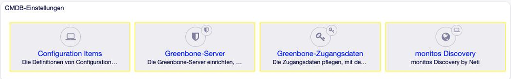
Abb. 2 Der Connector bringt zwei Einträge im Admin-Bereich mit, beide unter „CMDB-Einstellungen“.¶
Die Übersicht zeigt alle eingerichteten Server mit Host, Verbindungsweg, GMP-Benutzer und Gültigkeit. Der Hinweis daneben nennt den Befehl für den Hostschlüssel — den braucht jeder Server einmal, bevor die erste SSH-Verbindung zustande kommt.
{kind=link}
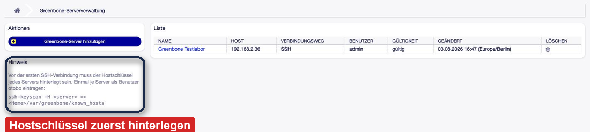
Abb. 3 Die Serverübersicht. Mehrere Server sind ausdrücklich vorgesehen, etwa einer je Standort.¶
Beim Anlegen sind nur Name und Host Pflicht. Der Name ist der, unter dem der Server überall sonst erscheint — insbesondere am Config Item.
{kind=link}
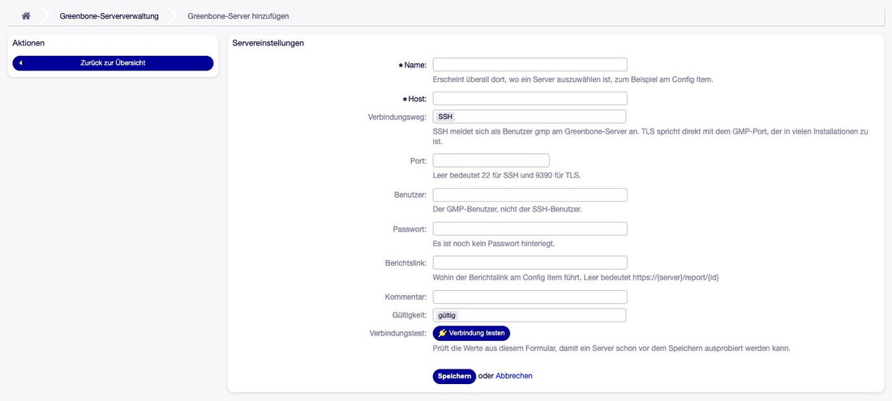
Abb. 4 Die Anlegemaske. Jedes Feld trägt seine Erklärung unter sich.¶
Feld |
Bedeutung |
|---|---|
Name |
Erscheint überall dort, wo ein Server auszuwählen ist, zum Beispiel am Config Item. |
Host |
Adresse oder Name des Greenbone-Servers. |
Verbindungsweg |
SSH meldet sich als Benutzer |
Port |
Leer bedeutet 22 für SSH und 9390 für TLS. |
Benutzer |
Der GMP-Benutzer, nicht der SSH-Benutzer. |
Passwort |
Beim Bearbeiten leer lassen, um das gespeicherte zu behalten; ein neuer Eintrag ersetzt es. |
Berichtslink |
Wohin der Link „Öffnen“ am Config Item führt. Leer bedeutet |
Gültigkeit |
Ein ungültiger Server verschwindet aus den Auswahllisten, bleibt aber erhalten. |
Verbindungstest¶
Der Knopf Verbindung testen prüft die Werte, die gerade im Formular stehen — ein Server lässt sich also ausprobieren, bevor er gespeichert wird. Bei Erfolg antwortet er mit der GMP-Version des Servers.
{kind=link}
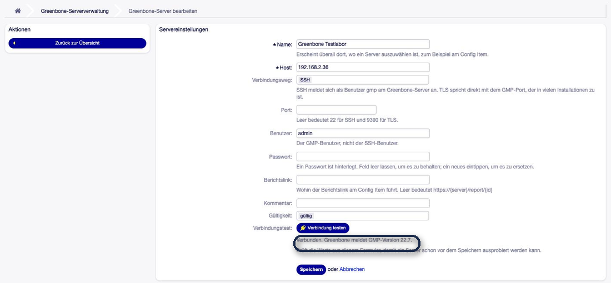
Abb. 5 Ein erfolgreicher Verbindungstest nennt die GMP-Version — damit ist belegt, dass Netzweg, Anmeldung und Protokoll stimmen.¶
Schlägt der Test fehl, sagt die Meldung, wo zu suchen ist:
Meldung |
Wo der Fehler liegt |
|---|---|
„Der Server war nicht erreichbar.“ |
Netzweg, Firewall, Name oder Port. Bei SSH auch: der Hostschlüssel fehlt. |
„Die Anmeldung wurde abgewiesen.“ |
GMP-Benutzer oder Passwort. Der Netzweg steht. |
„Der Server hat nicht rechtzeitig geantwortet.“ |
Greenbone ist erreichbar, aber überlastet oder hängt. Notfalls |
„Der Server hat geantwortet, aber nicht wie erwartet.“ |
Am anderen Ende sitzt kein GMP 22.7 — falscher Port oder falscher Dienst. |
Zugangsdaten verwalten¶
Admin → CMDB-Einstellungen → Greenbone-Zugangsdaten
Ein authentifizierter Scan meldet sich am Zielsystem an und sieht deutlich mehr als ein Scan von außen — installierte Pakete, Patchstände, Konfiguration. Dafür braucht Greenbone Zugangsdaten.
Wichtig
Zugangsdaten liegen in Greenbone, nicht in OTOBO. Was in dieser Maske eingetragen wird, wird an Greenbone weitergereicht und im Ticketsystem nicht gespeichert. Deshalb gibt Greenbone ein Geheimnis auch nie wieder heraus: Beim Bearbeiten sind die Geheimnisfelder leer, und leer heißt „behalten“.
{kind=link}
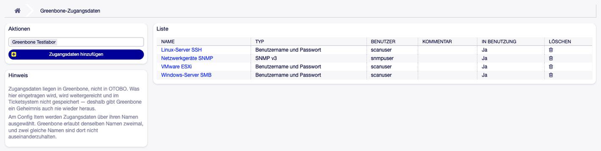
Abb. 6 Die Zugangsdaten eines Servers. Die Spalte „In Benutzung“ sagt, ob ein Scan-Ziel sie verwendet.¶
Greenbone kennt vier Formate:
{kind=link}
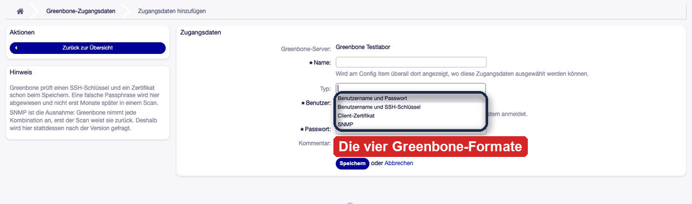
Abb. 7 Die vier Formate. Der Typ lässt sich nachträglich nicht ändern.¶
Format |
Wofür |
|---|---|
Benutzername und Passwort |
Der Normalfall — SSH, SMB und ESXi lassen sich damit bedienen. |
Benutzername und SSH-Schlüssel |
Privater Schlüssel mit optionaler Passphrase, für Linux-Systeme. |
Client-Zertifikat |
Zertifikat und privater Schlüssel; beide lassen sich nur gemeinsam austauschen. |
SNMP |
Netzwerkgeräte. Fragt nach der Version statt nach einem Algorithmus — siehe unten. |
Bemerkung
Greenbone prüft Schlüssel und Zertifikat schon beim Speichern. Eine falsche Passphrase wird sofort abgewiesen und nicht erst Monate später in einem Scan. Bei drei der vier Formate ist die Eingabe damit belastbar geprüft.
SNMP ist die Ausnahme¶
Bei SNMP nimmt Greenbone jede Kombination an; erst der Scan weist sie zurück. Deshalb fragt die Maske nach der Version, statt einen Algorithmus zur freien Wahl zu stellen:
v1 / v2c kennen nur die Community.
v3 braucht Benutzer, Passwort und einen Authentifizierungsalgorithmus. Ohne ihn speichert Greenbone die Zugangsdaten klaglos — und jeder Scan damit scheitert.
{kind=link}
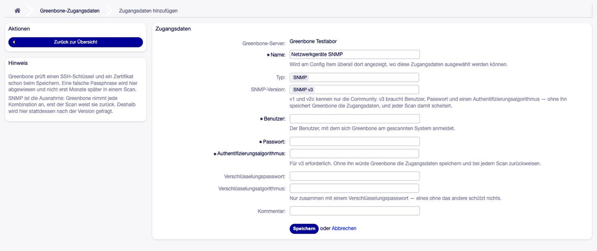
Abb. 8 SNMP v3 mit den Feldern, die die Version verlangt. Verschlüsselungspasswort und -algorithmus gehören zusammen: eines ohne das andere schützt nichts.¶
Warnung
Zwei Änderungen bestätigt Greenbone, ohne sie auszuführen — die Maske fängt beide vorher ab und sagt es, statt einen Erfolg zu melden, den es nicht gibt:
Der Typ einer Zugangsdaten-Angabe lässt sich nicht wechseln.
Zugangsdaten, die bereits SNMP v3 sind, lassen sich nicht auf v1/v2c zurückstellen.
In beiden Fällen: neue Zugangsdaten anlegen.
Bemerkung
Namen sind in Greenbone nicht eindeutig. Am Config Item werden Zugangsdaten über ihren Namen ausgewählt, und zwei gleiche Namen sind dort nicht auseinanderzuhalten. Die Übersicht markiert Doppelnamen deshalb.
Zugangsdaten, die ein Scan-Ziel benutzt, lassen sich nicht löschen — Greenbone weist das ab.
Klassen scanbar machen¶
Das Paket bringt die Felder und die Rolle Greenbone mit, entscheidet aber nicht, welche
Klassen gescannt werden. Das legt der Administrator je Klasse fest — Server, Client, Router,
IP Network, was auch immer gescannt werden soll.
Zwei Stellen, beide in Admin → Configuration Items → Klassendefinition:
Roles:
Greenbone:
Name: Greenbone
und in der Content-Liste der Seite, auf der die Einstellungen erscheinen sollen:
- Section: Greenbone::Scan Settings
- Section: Greenbone::Vulnerabilities
Danach steht am Config Item ein Block „Greenbone“ mit den Scan-Einstellungen und darunter die Section „Schwachstellen“.
Warnung
Bestehende Config Items zeigen die neue Section erst nach dem nächsten Speichern. Die Ansicht rendert die Definition der angezeigten Version, nicht die aktuelle der Klasse. Wer die Section einträgt und sich wundert, warum an einem vorhandenen Gerät nichts erscheint: einmal bearbeiten und speichern genügt.
Tipp
Die Reihenfolge der beiden Sections bestimmt, was oben steht. Üblich ist, die Einstellungen zu den Netzwerkangaben zu legen und die Schwachstellen darunter — die Section braucht die volle Breite.
Warnung
Bieten die vier Zugangsdaten-Felder jeweils alle Zugangsdaten an, ist die Klassendefinition älter als das Paket. Richtig ist: SSH zeigt Benutzer/Passwort und SSH-Schlüssel, SMB und ESXi nur Benutzer/Passwort, SNMP nur SNMP-Zugangsdaten. Steht in jedem Feld alles — bis hin zu einem Client-Zertifikat, das in keines davon gehört — dann greift die Einschränkung nicht.
Der Grund: Eine Klassendefinition speichert eine Kopie der Feldkonfiguration, und innerhalb der Scan-Einstellungen ist diese Kopie das, was die Maske anzeigt. Eine Definition, die vor dem Paket-Upgrade gespeichert wurde, kennt die Einschränkung schlicht nicht.
Das Upgrade zieht die Definition selbst nach. Übersprungen wird sie nur dort, wo die Einstellung am Feld bereits gesetzt war — dann gibt es aus Sicht des Upgrades nichts zu tun. Abhilfe in dem Fall: die Klassendefinition einmal öffnen und speichern, ohne etwas zu ändern. Danach stimmen die Listen.
Folgenlos ist die falsche Auswahl nicht: Greenbone nimmt eine unpassende Kombination beim Speichern des Scan-Ziels nicht an, und die Meldung erreicht den Anwender lange nach der Entscheidung und weit weg von dem Feld, in dem er sie getroffen hat.
Ergebnisse in Listen zeigen¶
Das gespeicherte Scan-Ergebnis steht in Feldern des Config Items und lässt sich damit als Spalte einer CMDB-Übersicht einblenden, danach filtern und sortieren. Freigeschaltet wird eine Spalte in der Systemkonfiguration unter:
ITSMConfigItem::Frontend::AgentITSMConfigItem###DefaultColumns
Wert 1 blendet die Spalte anwählbar ein, Wert 2 zeigt sie von vornherein.
Bemerkung
Diese Einstellung liefert das Paket bewusst nicht mit: Sie gehört der CMDB, nicht dem Connector. Wer sie mitlieferte, überschriebe die Spaltenauswahl des Kunden.
Zur Auswahl stehen:
Feld |
Inhalt |
|---|---|
|
Höchster Schweregrad des jüngsten abgeschlossenen Scans, als Zahl. |
|
Die Stufe dazu: Kritisch, Hoch, Mittel, Niedrig, Hinweis, Fehlalarm, Nicht bewertet. Danach filtern, nicht nach der Zahl — als Text sortiert sich 10.0 vor 4.8. |
|
Wie der Scan geendet hat: Fertig, Angehalten, Abgebrochen. Angehalten oder abgebrochen heißt, dass die Werte aus einem unvollständigen Lauf stammen. |
|
Ende des Scans, aus dem die Werte stammen — sagt, wie alt die Zahl daneben ist. |
|
Der Bericht, aus dem gezählt wurde. |
|
Ob die Werte aus einem eigenen Scan stammen oder aus dem Scan des Netzes. |
Nächtlichen Abgleich einschalten¶
Die Felder oben füllt ein Konsolenbefehl, den der OTOBO-Daemon nachts anstößt. Er ist im Paket enthalten, aber ab Werk ausgeschaltet: Sinnvoll ist er erst, wenn ein Greenbone-Server eingerichtet ist — vorher würde er jede Nacht scheitern.
Einschalten in der Systemkonfiguration unter
Daemon::SchedulerCronTaskManager::Task###GreenboneStatusSync.
Wichtig
Der Zeitplan gehört hinter die Scans. Der Vorgabewert 04:20 Uhr geht davon aus, dass die nächtlichen Scans bis dahin durch sind. Wer seine Scans später fahren lässt, muss den Abgleich nach hinten schieben — sonst schreibt er jede Nacht das Ergebnis des Vortages.
Der Befehl lässt sich auch von Hand starten:
# jedes Config Item mit eigenem Scan
bin/otobo.Console.pl Maint::Greenbone::StatusSync
# anzeigen, was geschrieben würde, ohne zu schreiben
bin/otobo.Console.pl Maint::Greenbone::StatusSync --dry-run
# auch Geräte füllen, die keinen eigenen Scan haben, aber in einem gescannten Netz liegen
bin/otobo.Console.pl Maint::Greenbone::StatusSync --inherited
# nur die Config Items eines Greenbone-Servers
bin/otobo.Console.pl Maint::Greenbone::StatusSync --server-id 3
# ein einzelnes Config Item, zum Ausprobieren
bin/otobo.Console.pl Maint::Greenbone::StatusSync --config-item-id 3597
Tipp
--inherited gehört in die Parameter des Daemon-Tasks, wenn die Übersicht auch für Geräte ohne
eigenen Scan eine Aussage treffen soll. Das ist der häufigere Fall, als man denkt: Ein frisch
importiertes Gerät hat den Schalter auf „Nein“ stehen, und die geerbten Funde sind dann die
einzigen, die es gibt.
Sicherheitshinweise¶
Einen eigenen GMP-Benutzer anlegen, nicht admin verwenden. Das ist die Maßnahme, die am
meisten trägt. Der Connector braucht nur die Rechte, die er tatsächlich nutzt: Ziele und Aufträge
verwalten, Scans starten, Berichte lesen, Zugangsdaten pflegen.
Zum GMP-Passwort: Es steht nicht im Klartext in der Datenbank, sondern läuft durch dieselbe
Mechanik, mit der OTOBO das Datenbankpasswort in Kernel/Config.pm ablegt.
Warnung
Das ist Verschleierung, keine Verschlüsselung — eine Bitinvertierung ohne Schlüssel, und der Quelltext ist offen. Sie schützt gegen den Blick über die Schulter und gegen ein Passwort, das in einem Datenbank-Dump lesbar herumliegt. Sie schützt nicht gegen jemanden, der die Datenbank in der Hand hat.
Echte Verschlüsselung wurde geprüft und verworfen: Auf einem OTOBO-System steht keine
Krypto-Bibliothek zur Verfügung, und scripts/backup.pl packt Konfiguration und
Datenbank-Dump nebeneinander — eine Schlüsseldatei läge im selben Backup.
Der Hebel, der wirklich trägt, ist der eigene GMP-Benutzer.
Anwender-Handbuch¶
Scan an einem Config Item einrichten¶
Am Config Item steht in der Bearbeiten-Maske ein Block Greenbone. Er erscheint auf der Seite, auf der der Administrator die Section eingetragen hat — in der mitgelieferten CMDB üblicherweise bei den Netzwerk-Informationen.
{kind=link}
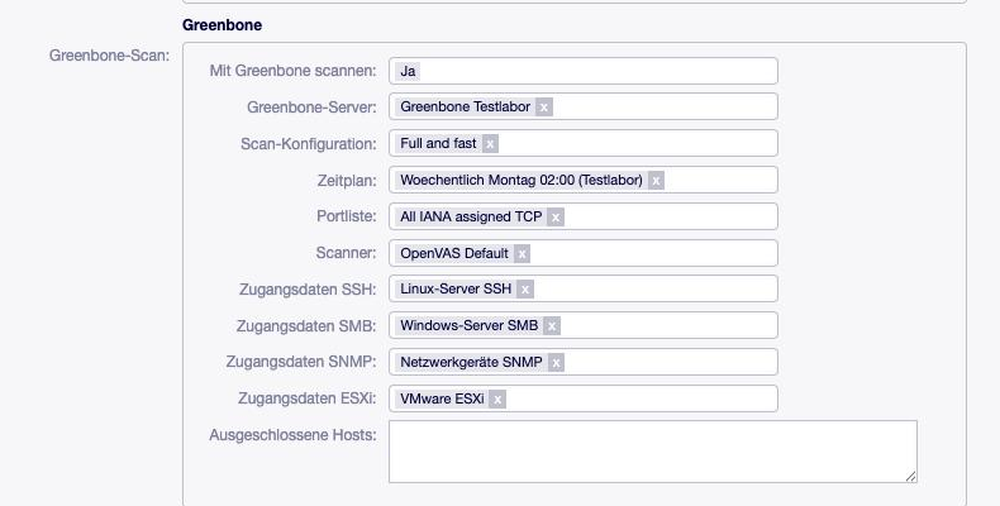
Abb. 9 Die Scan-Einstellungen am Config Item. Die Auswahllisten kommen live vom gewählten Server; ein Serverwechsel lädt sie neu.¶
Feld |
Bedeutung |
|---|---|
Mit Greenbone scannen |
Ob dieses Config Item überhaupt an Greenbone übergeben wird. Steht es auf Nein, wird beim Speichern nichts angelegt — und ein vorhandener Auftrag wieder entfernt. |
Greenbone-Server |
Der Server, der den Scan ausführt. Die Listen darunter kommen von ihm. |
Scan-Konfiguration |
Welchen Satz von Tests Greenbone ausführt, zum Beispiel Full and fast. |
Zeitplan |
Wann der Scan von allein läuft. Leer bedeutet: nur auf Anforderung. |
Portliste |
Welche Ports betrachtet werden. Ohne Portliste legt Greenbone kein Ziel an. |
Scanner |
Welcher Scanner die Arbeit macht. |
Zugangsdaten SSH / SMB / SNMP / ESXi |
Für einen authentifizierten Scan. Gepflegt werden sie unter Zugangsdaten verwalten. |
Ausgeschlossene Hosts |
Adressen, Bereiche oder Netze, die ausgelassen werden, durch Komma getrennt. |
Bemerkung
Die vier Zugangsdaten-Felder sind nach ihrer Verwendung benannt, Greenbone kennt vier Formate. Das ist nicht dasselbe: Ein Eintrag vom Format „Benutzername und Passwort“ kann an allen vier Stellen stehen.
Was beim Speichern passiert¶
Das Speichern der Einstellungen ist das Anlegen von Ziel und Auftrag in Greenbone. Es läuft sofort und nicht im Hintergrund, damit ein Tippfehler in der Ausschlussliste oder ein nicht erreichbarer Scanner unmittelbar als Meldung am Config Item steht statt nur im Log.
Geändert wurde |
Was in Greenbone passiert |
|---|---|
Hosts, Ausschlussliste oder Portliste |
Ein neues Ziel entsteht, der Auftrag zieht um, das alte Ziel wird entfernt. Die bisherigen Berichte bleiben erhalten. |
Scan-Konfiguration, Zeitplan oder Scanner |
Nur der Auftrag wird geändert, das Ziel bleibt. |
„Mit Greenbone scannen“ auf Nein |
Auftrag und Ziel verschwinden. Die Einstellungen am Config Item bleiben stehen. |
Der Greenbone-Server wurde gewechselt |
Auf dem neuen Server entstehen Ziel und Auftrag. Ziel und Auftrag auf dem bisherigen Server bleiben stehen und müssen dort entfernt werden — die Meldung sagt das auch. |
Häufige Meldungen beim Speichern:
„Das Config Item hat keine IP-Adresse und kein Netz zum Scannen“ — es gibt nichts, woraus sich ein Ziel bauen ließe. Erst die Netzwerkangaben füllen.
„Ohne Portliste legt Greenbone kein Ziel an“ — eine Portliste auswählen.
„In der Ausschlussliste übergangen, weder Adresse noch Bereich noch Netz: …“ — ein Eintrag ist keine gültige Angabe und wurde ausgelassen. Der Rest wurde übernommen.
Ergebnisse lesen¶
Die Section Schwachstellen zeigt, was Greenbone über das Gerät weiß.
{kind=link}
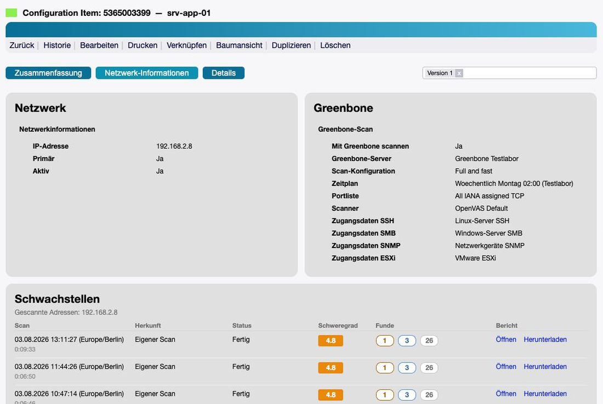
Abb. 10 Das Config Item mit den Scan-Einstellungen und der Section darunter.¶
{kind=link}
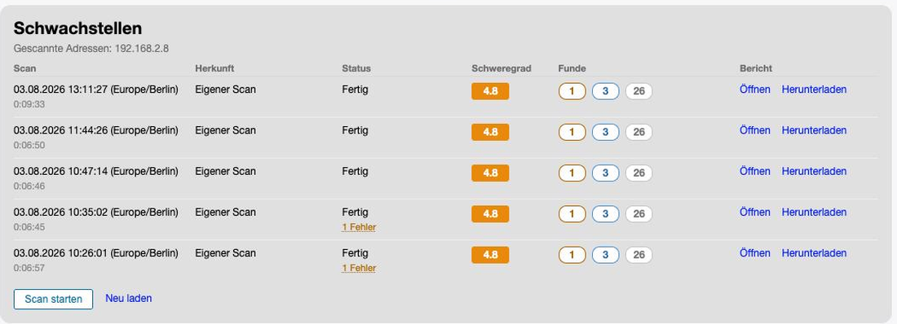
Abb. 11 Die letzten Berichte, neueste zuerst. Unter dem Datum steht die Dauer des Laufs.¶
Spalte |
Bedeutung |
|---|---|
Scan |
Zeitpunkt und darunter die Dauer des Laufs. |
Herkunft |
Eigener Scan oder Netzscan. Beide stehen in derselben Tabelle — in zwei getrennten Tabellen liest man leicht die kleinere Zahl als die ganze Wahrheit. |
Status |
Wie der Lauf geendet hat. Meldet er Fehler, steht darunter ein Link. |
Schweregrad |
Der höchste Wert des Berichts, farblich hinterlegt. |
Funde |
Die Anzahl je Stufe. Gezählt werden nur die Funde, die zu den Adressen dieses Config Items gehören — auch bei einem Netzscan. |
Bericht |
Öffnen führt in die Greenbone-Oberfläche, Herunterladen holt die Datei. |
Bemerkung
Die Section wird nachgeladen, nicht mit der Seite gerendert. Einen Bericht zu lesen sind mehrere Runden über die Verbindung; würde das im Seitenaufbau passieren, hielte ein langsames oder totes Greenbone die komplette Config-Item-Ansicht auf — für alle, auch für die, die nie in die Section schauen. Solange geladen wird, steht dort „Die Scan-Ergebnisse werden von Greenbone gelesen.“
Tipp
Weichen die Zahlen von denen in Greenbone ab? Dann liegt es fast immer an der Erkennungsgüte:
Der Connector zählt ab MinQoD (Vorgabe 70), in der Greenbone-Oberfläche lässt sich der Wert
je Ansicht ändern.
Wenn ein Scan Fehler meldet¶
Meldet ein Bericht Fehler, steht unter dem Status ein Link. Ein Klick darauf zeigt den Grund im Klartext — nicht nur die Zahl.
{kind=link}
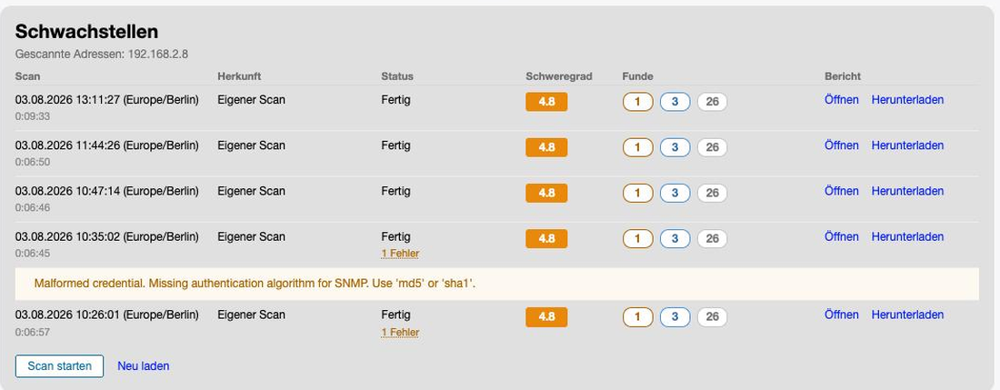
Abb. 12 Der Grund, so wie Greenbone ihn nennt. Hier fehlt am SNMP-Credential der Authentifizierungsalgorithmus.¶
Wichtig
Ein Fehler heißt nicht zwangsläufig „Host nicht erreichbar“. Er kann auch am Auftrag selbst hängen, etwa an Zugangsdaten, die Greenbone nicht verwerten kann. Solange der Fehler steht, fehlen die betroffenen Prüfungen im Ergebnis — das Gerät sieht sauberer aus, als es ist.
Solche Fehler gehören in Greenbone behoben, nicht in OTOBO.
Bericht öffnen und herunterladen¶
Öffnen führt in die Greenbone-Oberfläche, auf genau diesen Bericht. Wohin der Link zeigt, bestimmt der Berichtslink am Server.
Herunterladen holt den Bericht als Datei. Zur Auswahl stehen die Formate, die der Greenbone-Server anbietet.
{kind=link}
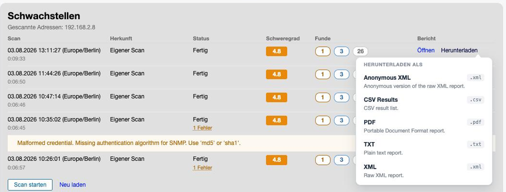
Abb. 13 Die Formatauswahl. Welche Formate erscheinen, entscheidet der Greenbone-Server.¶
Bemerkung
Beim Netzscan unterscheiden sich die beiden Wege bewusst:
Öffnen zeigt in Greenbone den Bericht des ganzen Netzes — dort gibt es keine gerätescharfe Ansicht.
Herunterladen liefert den Bericht eingegrenzt auf die Adressen dieses Config Items, also genau die Funde, die die Zeile daneben zählt.
Scan von Hand starten¶
In der Section steht der Knopf Scan starten. Er löst denselben Lauf aus, den auch der Zeitplan anstößt — unabhängig davon, wann der das nächste Mal dran wäre.
Bemerkung
Der Knopf erscheint nur, wenn man Schreibrecht auf das Config Item hat. Die Funde zu lesen deckt ein Leserecht ab, sie zu verursachen nicht: Ein Scan belastet die Maschine und das Netz, in dem sie steht.
Gesperrt ist der Knopf in zwei Fällen, und er bleibt dabei sichtbar statt zu verschwinden — der Grund steht im Tooltip:
Greenbone arbeitet gerade an diesem Auftrag. Ein zweiter Start würde denselben Rechner ein zweites Mal scannen; Greenbone nähme das klaglos an und schriebe einen weiteren Bericht.
Greenbone ist nicht erreichbar. Dann ist schlicht unbekannt, ob der Scan läuft.
Nach dem Start meldet die Oberfläche, dass Greenbone den Scan angenommen hat. Bis der erste Bericht erscheint, dauert es je nach Umfang Minuten bis Stunden — Neu laden in der Section holt den Stand nach.
Referenz¶
Berechtigungen¶
Was |
Wer darf es |
|---|---|
Server und Zugangsdaten verwalten |
Gruppe |
Scan-Einstellungen am Config Item ändern |
Schreibrecht auf das Config Item (Gruppe |
Section lesen, Bericht öffnen und herunterladen |
Leserecht auf das Config Item |
Scan starten |
Schreibrecht auf das Config Item |
Bemerkung
Die Prüfung sitzt jeweils im Backend, nicht nur in der Oberfläche. Ein ausgegrauter Knopf ist eine Höflichkeit gegenüber dem Anwender, keine Kontrolle — die Anfrage dahinter ließe sich abschicken, ohne die Seite je gesehen zu haben. Auch eine Berichts-ID ist keine Berechtigung: Geprüft wird, ob der Bericht zum eigenen oder zum Netz-Auftrag des Config Items gehört.
Was in Greenbone angelegt wird¶
Zu jedem Config Item mit eingeschaltetem Scan gehören ein Ziel (Target) und ein Auftrag
(Task). Beide heißen otobo_<CI-Name>_<CI-ID>, damit in der Greenbone-Oberfläche sofort erkennbar
ist, woher ein Auftrag stammt.
Bemerkung
Über den Namen wird nie etwas nachgeschlagen. Welches Ziel und welcher Auftrag zu einem
Config Item gehören, steht in der Tabelle greenbone_ci_scan. Ein Auftrag, der in Greenbone
umbenannt wird, funktioniert weiter.
Der Auftrag wird als alterable angelegt. Nur so lässt sich ein Auftrag mit vorhandenen Berichten
auf ein anderes Ziel legen — ohne das kostet jede Änderung an den Hosts alle bisherigen Berichte.
Vererbung aus dem Netz¶
Ein Gerät ohne eigenen Scan zeigt trotzdem Funde, wenn das IP-Netz, zu dem es gehört, gescannt wird. Dafür braucht es zweierlei:
Ein Config Item der Klasse IP Network mit eingeschaltetem Scan.
Am Gerät ein Feld, das auf dieses Netz zeigt — welches, sagt
GreenboneConnector::NetworkReferenceFields.
Aus dem Netz-Bericht werden dann die Funde herausgefiltert, die zu den Adressen des Geräts gehören. Weil das Netz über die Referenz aufgelöst wird und nicht über die Adresse, kann eine doppelt vergebene IP in einem anderen Netz keine fremden Ergebnisse hereinziehen.
{kind=link}
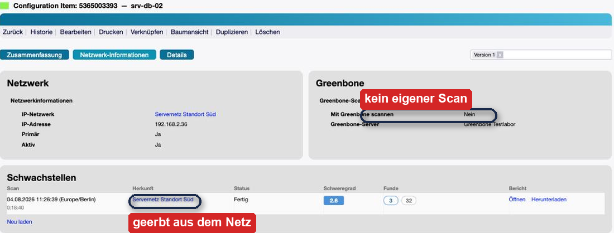
Abb. 14 Ein Gerät ohne eigenen Scan. In der Spalte Herkunft steht der Name des Netzes, aus dem die Funde stammen — und weil kein eigener Auftrag existiert, gibt es hier auch keinen Knopf „Scan starten“.¶
Bemerkung
Die Zahlen sind gefiltert, nicht die des ganzen Netzes. Im Beispiel oben meldet der Scan über das gesamte Netz den Schweregrad 4.8 mit 68 Funden; am einzelnen Gerät stehen 2.6 und 35 — genau das, was auf seine Adresse entfällt.
Tipp
Der Export-Schalter am Gerät steuert nur dessen eigenen Scan. Der geerbte Netzscan wird auch dann angezeigt, wenn am Gerät kein eigener Scan eingeschaltet ist — und genau dieser Fall ist der häufigste.
Datenbanktabellen¶
Tabelle |
Inhalt |
|---|---|
|
Die eingerichteten Greenbone-Server. |
|
Je Config Item: Server, Ziel- und Auftrags-UUID, die gescannten Adressen und das Ergebnis des letzten Abgleichs. |
Beim Deinstallieren werden beide Tabellen entfernt. Die dynamischen Felder und die Rolle
Greenbone bleiben stehen — sie zu entfernen nähme ihre Werte mit und machte jede
Klassendefinition unbrauchbar, die noch auf sie verweist. Ein Hinweis im Log sagt das auch.